소방설비산업기사(전기) (2018-03-04 기출문제)
1과목: 소방원론
1. 20℃의 물 400g을 사용하여 화재를 소화하였다. 물 400g이 모두 100℃로 기화하였다면 물이 흡수한 열량은 몇 kcal인가?(단 물의 비열은 1cal/gㆍ℃이고, 증발잠열은 539cal/g 이다.)
- 215.6
- 223.6
- 247.6
- 255.6
(정답률: 63%)

2. 분말소화약제 중 A, B, C급의 화재에 모두 사용할 수 있는 것은?
- 제1종 분말소화약제
- 제2종 분말소화약제
- 제3종 분말소화약제
- 제4종 분말소화약제
(정답률: 86%)
3. 기름탱크에서 화재가 발생하였을 때 탱크하부에 있는 물 또는 물-기름 에멀젼이 뜨거운 열유충에 의해서 가열되어 유류가 탱크 밖으로 갑자기 분출하는 현상은?
- 리프트(Lift)
- 백화이어(Back-Fire)
- 플래쉬오버(Flash Over)
- 보일오버(Boil Over)
(정답률: 87%)
4. 소화방법 중 질식소화에 해당하지 않는 것은?
- 이산화탄소소화기로 소화
- 포소화기로 소화
- 마른모래로 소화
- Halon-1301 소화기로 소화
(정답률: 81%)
5. 열에너지원 중 화학적 열에너지가 아닌 것은?
- 분해열
- 용해열
- 유도열
- 생성열
(정답률: 68%)
6. 적린의 착화온도는 약 몇 ℃ 인가?
- 34
- 157
- 180
- 260
(정답률: 67%)
7. 건축물에서 방화구획의 구획 기준이 아닌 것은?
- 피난구획
- 수평구획
- 층간구획
- 용도구획
(정답률: 55%)
8. 제3종 분말소화약제의 주성분으로 옳은 것은?
- 탄산수소칼륨
- 탄산수소나트륨
- 탄산수소칼륨과 요소
- 제1인삼암모늄
(정답률: 86%)
9. 내화구조의 지붕에 해당하지 않는 구조는?
- 철근콘크리트조
- 철골철근콘크리트조
- 철재로 보강된 유리블록
- 무근콘크리트조
(정답률: 75%)
10. 물의 비열과 증발잠열을 이용한 소화효과는?
- 희석효과
- 억제효과
- 냉각효과
- 질식효과
(정답률: 81%)
11. 메탄가스 1 mol을 완전 연소시키기 위해서 필요한 이론적 최소 산소요구량은 몇 mol인가?
- 1
- 2
- 3
- 4
(정답률: 69%)
12. 가연물이 되기 위한 조건이 아닌 것은?
- 산화되기 쉬울 것
- 산소와의 친화력이 클 것
- 활성화 에너지가 클 것
- 열전도도가 작을 것
(정답률: 78%)
13. 조리를 하던 중 식용유 화재가 발생하면 신선한 야채를 넣어 소화할 수 있다. 이 때의 소화방법에 해당 하는 것은?
- 희석소화
- 냉각소화
- 부촉매소화
- 질식소화
(정답률: 80%)
14. 25℃에서 증기압이 100 mmHg 이고 증기밀도(비중)가 2인 인화성액체의 증기-공기밀도는 약 얼마인가?(단, 전압은 760 mmHg 로 한다.)
- 1.13
- 2.13
- 3.13
- 4.13
(정답률: 46%)
15. 전기 부도체이며 소화 후 장비의 오손 우려가 낮기 때문에 전기실이나 통신실 등의 소화설비로 적합한 것은?
- 스프링클러소화설비
- 옥내소화전설비
- 포소화설비
- 이산화탄소소화설비
(정답률: 79%)
16. 목조건축물의 온도와 시간에 따른 화재특성으로 옳은 것은?
- 저온단기형
- 저온장기형
- 고온단기형
- 고온장기형
(정답률: 87%)
17. 청정소화약제 중 최대허용설계농도가 가장 낮은 것은?
- FC-3-1-10
- FIC-13I1
- FK-5-1-12
- IG-541
(정답률: 51%)
18. 플래쉬오버(Flash Over)의 지연대책으로 틀린 것은?
- 두께가 얇은 가연성 내장재료를 사용한다.
- 열전도율이 큰 내장재료를 사용한다.
- 주요구조부를 내화구조로 하고 개구부를 적게 설치한다.
- 실내에 저장하는 가연물의 양을 줄인다.
(정답률: 68%)
19. 미분무소화설비의 소화효과 중 틀린 것은?
- 질식
- 부촉매
- 냉각
- 유화
(정답률: 66%)
20. 자연발화성 물질이 아닌 것은?(오류 신고가 접수된 문제입니다. 반드시 정답과 해설을 확인하시기 바랍니다.)
- 황린
- 나트륨
- 칼륨
- 유황
(정답률: 54%)
2과목: 소방전기회로
21. 분전반에서 25m 의 거리에 교류 단상 100V, 20A 전열기를 설치하였다. 전압강하를 2V 이하로 하기 위한 전선의 최소 굵기는 몇 mm2 인가?
- 4.5
- 7.7
- 8.9
- 10.1
(정답률: 45%)
22. 직선전류에 의해서 그 주위에 생기는 환상의 자계방향은?
- 전류의 반대방향
- 전류의 방향
- 오른나사의 진행방향
- 오른나사의 회전방향
(정답률: 69%)
23. 자동제어에서 ON-OFF 제어방식으로 미리 정해 놓은 순서에 따라 각 단계가 순차적으로 진행되는 제어방식은?
- 프로세스제어
- 서보제어
- 프로그램제어
- 시퀸스제어
(정답률: 73%)
24. R-L-C 직렬회로에서 C 및 L의 값은 고정시켜 놓고 저항 R의 값을 변화 시킬 때 옳은 것은?
- 공진주파수가 작아짐
- 공진주파수는 변하지 않음
- 공진주파수가 약간 커짐
- 공진주파수가 매우 커짐
(정답률: 68%)
25. 전류가 22A 로서 2.6kW의 전력을 소비하는 직류 부하의 저항은 약 몇 Ω 인가?
- 3.27
- 5.37
- 7.27
- 9.37
(정답률: 69%)
26. 어느 전동기가 회전하고 있을 때 전압 및 전류의 실효값이 각각 50 V, 3 A이고 역률이 0.6이라면 무효전력은 몇 Var인가?
- 18
- 90
- 120
- 210
(정답률: 54%)
27. 다음 그림과 같은 유접점 회로의 논리식은?
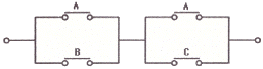
- A + BC
- B + AC
- AB + B
- AB + BC
(정답률: 82%)
28. 그림과 같은 블록선도에서 C(s)는?
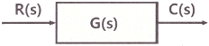
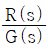
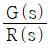
- G(s)
- G(s)R(s)
(정답률: 65%)
29. 두 코일이 결합계수 0.3으로 인접해 있다. 코일 1의 자기인덕턴스가 10 μH 이고, 코일 2의 자기인덕턴스가 5μH일 때 이 코일의 상호인덕턴스는 약 몇 μH 인가?
- 0.04
- 2.12
- 3.12
- 5
(정답률: 59%)
30. 전기식 온도계의 종류로 옳은 것은?
- 유리 온도계
- 바이메탈 온도계
- 압력식 온도계
- 열전대 온도계
(정답률: 63%)
31. 다음 그림과 같은 브리지회로에서 흐르는 전류는 몇 A 인가?
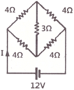
- 3
- 4
- 4.5
- 5
(정답률: 65%)
32. 60 Hz, 120 V 정격의 단상유도전동기가 있다. 이 전동기의 출력은 5HP, 효율은 88%, 역률이 60%라면 이 역률을 100%로 개선하기 위한 병렬콘덴서의 용량은 약 몇 kVA 인가?
- 3.6
- 4.7
- 5.7
- 6.1
(정답률: 40%)
33. 적산전력계의 시험방법이 아닌 것은?
- 무부하 시험
- 기동전류 시험
- 잠동(크리핑)시험
- 오차 시험
(정답률: 48%)
34. 비상 축전지의 정격용량이 50 Ah, 상시부하 2kW, 표준전압 100 V 인 부동충전 방식의 충전기의 2차전류(충전전류)는 몇 A 인가?(단, 상용전원 정전시의 비상 부하용량은 1kW 이다.)
- 5
- 15
- 25
- 35
(정답률: 47%)
35. 제어장치가 제어대상에 가하는 제어신호로 제어장치의 출력인 동시에 제어대상의 입력인 신호는?
- 조작량
- 제어량
- 목표값
- 동작신호
(정답률: 67%)
36. 전기회로의 전압 E, 전류 I 일 때
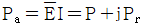
에서 무효전력 PR < 0 이다. 이 회로는 어떤 부하인가?- 유도성
- 용량성
- 저항성
- 공진성
(정답률: 59%)
37. 전계효과 트랜지스터(FET)의 특징이 아닌 것은?
- 동작은 다수 캐리어만의 이동에 의존한다.
- 제조 과정이 간단하여 회로에서 차지하는 공간이 작다.
- 입력저항이 대단히 적어 다른 트랜지스터보다 잡음이 작다.
- 직접도가 높다.
(정답률: 46%)
38. 단상변압기 권수비 a=8이고, 1차 교류전압은 220V 이다. 변압기 2차 전압을 단상 반파정류회로를 이용하여 정류했을 때 발생하는 직류전압의 평균치는 약 몇 V 인가?
- 11.38
- 12.38
- 13.38
- 13.75
(정답률: 49%)
39. 비정현파에 대한 설명으로 옳은 것은?
- 비정현파 = 직류분 + 기본파 + 고조파
- 비정현파 = 교류분 + 기본파 + 고조파
- 비정현파 = 직류분 + 고조파 - 기본파
- 비정현파 = 교류분 + 고조파 - 기본파
(정답률: 63%)
40. 내부저항 0.2 Ω인 건전지 5개를 직렬로 접속하고, 이것을 한 조로 하여 5조 병렬로 접속하면 합성내부저항은 몇 Ω 인가?
- 0.1
- 0.2
- 1
- 2
(정답률: 67%)
3과목: 소방관계법규
41. 제조소 또는 일반취급소에서 변경허가를 받아야 하는 경우가 아닌 것은?
- 배출설비를 신설하는 경우
- 불활성기체의 봉입장치를 신설하는 경우
- 위험물의 펌프설비를 증설하는 경우
- 위험물취급탱크의 탱크전용실을 증설하는 경우
(정답률: 54%)
42. 소방시설공사업법령상 완공검사를 위한 현장확인 대상 특정소방대상물의 범위기준으로 틀린 것은?
- 운동시설
- 호스릴 이산화탄소 소화설비가 설치되는 것
- 연면적 10000m2 이상이거나 11층 이상인 특정소방대상물(아파트는 제외)
- 가연성가스를 제조ㆍ저장 또는 취급하는 시설 중 지상에 노출된 가연성가스탱크의 저장용량 합계가 1000톤 이상인 시설
(정답률: 54%)
43. 대통령령 또는 화재안전기준이 변경되어 그 기준이 강화되는 경우 기존의 특정소방대상물의 소방시설 중 대통령령으로 정하는 것으로 변경으로 강화된 기준을 적용하여야 하는 소방시설은?(단, 건축물의 신축ㆍ개축ㆍ재축ㆍ이전 및 대수선 중인 특정소방대상물을 포함한다.)
- 비상경보설비
- 화재조기진압용 스프링클러설비
- 옥내소화전설비
- 제연설비
(정답률: 53%)
44. 화재예방, 소방시설 설치ㆍ유지 및 안전관리에 관한 법령상 스프링클러설비를 설치하여야 하는 특정소방대상물의 기준으로 틀린 것은?(단, 위험물 저장 및 처리 시설 중 가스시설 또는 지하구는 제외한다.)
- 물류터미널로서 바닥면적 합계가 2000m2 이상인 경우에는 모든 층
- 숙박이 가능한 수련시설에 해당하는 용도로 사용되는 시설의 바닥면적의 합계가 600 m2 이상인 것은 모든 층
- 종교시설(주요구조부가 목조인 것은 제외)로서 수용인원이 100명 이상인 것에 해당하는 경우에는 모든 층
- 지하가(터널은 제외)로서 연면적 1000m2 이상인 것
(정답률: 45%)
45. 특정소방대상물의 자동화재탐지설비 설치 면제기준 중 다음 ( ) 안에 알맞은 것은?(단, 자동화재탐지설비의 기능은 감지ㆍ수신ㆍ경보기능을 말한다.)
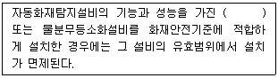
- 비상경보설비
- 연소방지설비
- 연결살수설비
- 스프링클러설비
(정답률: 71%)
46. 화재예방, 소방시설 설치ㆍ유지 및 안전관리에 관한 법령상 소방안전관리자를 두어야 하는 1급 소방안전관리대상물의 기준으로 틀린 것은?
- 30층 이상(지하층은 제외한다)이거나 지상으로부터 높이가 120m 이상인 아파트
- 가연성 가스를 1000톤 이상 저장ㆍ취급하는 시설
- 연면적 15000m2 이상인 특정소방 대상물(아파트는 제외)
- 지하구
(정답률: 67%)
47. 소방본부장 또는 소방서장은 건축허가 등의 동의요구서류를 접수한 날부터 며칠 이내에 건축허가등의 동의여부를 회신하여야 하는가?(단, 허가를 신청한 건축물은 특급 소방안전 관리대상물이다.)
- 5일
- 7일
- 10일
- 30일
(정답률: 51%)
48. 위험물안전관리법령상 정기점검의 대상인 제조소등의 기준으로 틀린 것은?
- 이송취급소
- 위험물을 취급하는 탱크로서 지하에 매설된 탱크가 있는 일반취급소
- 지정수량의 100배 이상의 위험물을 저장하는 옥외저장소
- 지정수량의 150배 이상의 위험물을 저장하는 옥외탱크저장소
(정답률: 63%)
49. 위험물안전관리법령상 제조소와 사용전압이 35000V를 초과하는 특고압가공전선에 있어서 안전거리는 몇 m 이상을 두어야 하는가?(단, 제6류 위험물을 취급하는 제조소는 제외한다.)
- 3
- 5
- 20
- 30
(정답률: 56%)
50. 소방기본법령상 특수가연물 중 품명과 지정수량의 연결이 틀린 것은?
- 사류 - 1000kg 이상
- 볏집류 - 3000 kg 이상
- 석탄ㆍ목탄류 - 10000kg 이상
- 합성수지류 발포시킨 것 - 20 m3 이상
(정답률: 61%)
51. 소방시설업의 영업정지처분을 받고 그 영업정지 기간에 영업을 한 자에 대한 2벌칙기준으로 옳은 것은?
- 1년 이하의 징역 또는 1000만원 이하의 벌금
- 2년 이하의 징역 또는 1200만원 이하의 벌금
- 3년 이하의 징역 또는 1500만원 이하의 벌금
- 5년 이하의 징역 또는 3000만원 이하의 벌금
(정답률: 55%)
52. 화재예방, 소방시설 설치ㆍ유지 및 안전관리에 관한 법상 피난시설, 방화구획 또는 방화시설의 폐쇄ㆍ훼손ㆍ변경 등의 행위를 한자에 대한 과태료 부과 기준으로 옳은 것은?
- 500만원 이하
- 300만원 이하
- 200만원 이하
- 100만원 이하
(정답률: 57%)
53. 공동 소방안전관리자를 선임해야 하는 특정 소방대상물의 기준이 아닌 것은?
- 판매시설 중 도매시장 및 소매시장
- 복합건축물로서 층수가 5층 이상인 것
- 지하층을 제외한 층수가 7층 이상인 고층 건축물
- 복합건축물로서 연면적이 5000m2 이상인 것
(정답률: 50%)
54. 소방기본법령상 시ㆍ도지사가 이웃하는 다른 시ㆍ도지사와 소방업무에 관하여 상호응원협정을 체결하고자 하는 때에 포함되어야 할 사항이 아닌 것은?
- 소방신호방법의 통일
- 화재조사활동에 관한 사항
- 응원출동 대상지역 및 규모
- 충동대원 수당ㆍ식사 및 피복의 수선 소요경비의 부담에 관한 사항
(정답률: 58%)
55. 화재예방, 소방시설 설치ㆍ유지 및 안전관리에 관한 법령상 분말형태의 소화약제를 사용하는 소화기의 내용연수로 옳은 것은?
- 10년
- 7년
- 3년
- 5년
(정답률: 73%)
56. 소방활동 종사 명령으로 소방활동에 종사한 사람이 그로 인하여 사망하거나 부상을 입은 경우 보상하여야 하는 자는?
- 국무총리
- 행정안전부장관
- 시ㆍ도지사
- 소방본부장
(정답률: 74%)
57. 위험물안전관리법령상 제조소 또는 일반 취급소에서 취급하는 제4류 위험물의 최대 수량의 합이 지정수량의 48만배 이상인 사업소의 자체소방대에 두는 화학소방자동차 및 인원기준으로 다음 ( ) 안에 알맞은 것은?
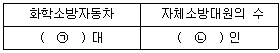
- ㉠ 1대, ㉡ 5인
- ㉠ 2대, ㉡ 10인
- ㉠ 3대, ㉡ 15인
- ㉠ 4대, ㉡ 20인
(정답률: 63%)
58. 화재예방, 소방시설 설치ㆍ유지 및 안전관리에 관한 법령상 성능위주설계를 하여야 하는 특정소방대상물(신축하는 것만 해당)의 기준으로 옳은 것은?
- 건축물의 높이가 100m 이상인 아파트등
- 연면적 100000m2 이상인 특정소방대상물
- 연면적 15000m2 이상인 특정소방대상물로서 철도 및 도시철도 시설
- 하나의 건축물에 영화사영관이 10개 이상인 특정소방대상물
(정답률: 55%)
59. 특수가연물의 저장 및 취급기준 중 다음 ( ) 안에 알맞은 것은?(단, 석탄ㆍ목탄류의 경우는 제외한다.)
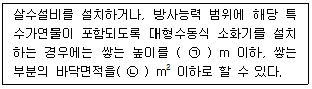
- ㉠ 15, ㉡ 200
- ㉠ 15, ㉡ 300
- ㉠ 10, ㉡ 50
- ㉠ 10, ㉡ 200
(정답률: 52%)
60. 기상법에 따른 이상기상의 예보 또는 특보가 있을 때 화재에 관한 경보를 발령하고 그에 따른 조치를 할 수 있는 자는?
- 소방청장
- 행정안전부장관
- 소방본부장
- 시ㆍ도지사
(정답률: 47%)
4과목: 소방전기시설의 구조 및 원리
61. 비상조명등의 일반구조 기준으로 틀린 것은?
- 상용전원전압의 110% 범위 안에서는 비상조명등 내부의 온도상승이 그 기능에 지장을 주거나 위해를 방생시킬 염려가 없어야 한다.
- 인출선의 길이는 전선인출 부분으로부터 200mm 이상이어야 한다. 다만, 인출선으로 하지 아니할 경우에는 출어지지 아니하는 방법으로 전선을 쉽고 확실하게 부착할 수 있도록 접속단자를 설치하여야 한다.
- 전선의 굵기가 인출선인 경우에는 단면적이 0.75 mm2 이상, 인출선외의 경우에는 단면적이 0.5 mm2 이상이어야 한다.
- 사용전압은 300 V이하이어야 한다. 다만, 충전부가 노출되지 아니한 것은 300 V를 초과할 수 있다.
(정답률: 42%)
62. 광원점등방식의 피난유도선의 설치기준 중 틀린 것은?
- 피난유도 표시부는 바닥으로부터 높이 1m 이하의 위치 또는 바닥 면에 설치할 것
- 피난유도 표시는 50cm 이내의 간격으로 연속되도록 설치하되 실내장식물 등으로 설치가 곤란할 경우 1m 이내로 설치할 것
- 피난유도 제어부는 조작 및 관리가 용이하도록 바닥으로부터 0.8m 이상 1.5m 이하의 높이에 설치할 것
- 부착대에 의하여 견고하게 설치할 것
(정답률: 49%)
63. 누전경보기 수신부의 기능검사 항목이 아닌 것은?
- 충격시험
- 절연저항시험
- 내식성시험
- 절연내력시험
(정답률: 57%)
64. 비상방송설비의 음향장치의 설치기준으로 틀린 것은?
- 하나의 특정소방대상물에 2 이상의 조작부가 설치되어 있는 때에는 각각의 조작부가 있는 장소 상호간에 동시통화가 가능한 설비를 설치하고, 어느 조작부에서도 해당 특정소방대상물의 전 구역에 방송을 할 수 있도록 할 것
- 기동장치에 따른 화재신고를 수신한 후 필요한 음량으로 화재방생 상황 및 피난에 유효한 방송이 자동으로 개시될 때까지의 소요시간은 10초 이하로 할 것
- 확성기는 각층마다 설치하되, 그 층의 각 부분으로부터 하나의 확성기까지의 수평거리가 25m 이하가 되도록 하고, 해당 층의 각 부분에 유효하게 경보를 발할 수 있도록 설치할 것
- 층수가 5층 이상으로서 연면적이 3000m2 를 초과하는 특정소방대상물은 2층 이상의 층에서 방화한 때에는 발화층ㆍ그 직상층 및 지하층에 경보를 발할 것
(정답률: 64%)
65. 비상벨설비 또는 자동식사이렌설비의 배선 설치기준 중 다음 ( ) 안에 알맞은 것은?
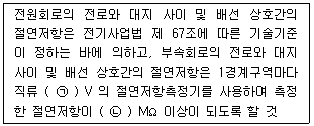
- ㉠ 250, ㉡ 0.1
- ㉠ 250, ㉡ 0.5
- ㉠ 500, ㉡ 0.1
- ㉠ 500, ㉡ 0.5
(정답률: 64%)
66. 비상방송설비의 구성 요소 중 전압전류의 진폭을 늘려 감도를 좋게 하고 미약한 음성전류를 커다란 음성전류로 변화시켜 소리를 크게 하는 장치는?
- 확성기
- 음량조절기
- 증폭기
- 변조기
(정답률: 65%)
67. 비상콘센트설비의 화재안전기준에 따른 교류에서의 저압은 몇 V 이하인 것을 말하는가?
- 220
- 380
- 600
- 750
(정답률: 65%)
68. 정온식 감지선형 감지기의 설치기준으로 옳은 것은?
- 감지선형 감지기의 굴곡반경은 10cm 이상으로 할 것
- 단자부와 마감 고정금구와의 설치간격은 5cm 이내로 설치할 것
- 감지기와 감지구역의 각 부분과의 수평거리가 내화구조의 경우 1종 4.5m 이하, 2종 3m 이하로 할 것
- 감지기와 감지구역의 각 부분과의 수평거리가 기타 구조의 경우 1종 1m 이하, 2종 3m 이하로 할 것
(정답률: 61%)
69. 사용자의 몸무게에 따라 자동적으로 내려올 수 있는 기구 중 사용자가 연속적으로 사용할 수 없는 피난기구는?
- 간이완강기
- 다수인피난장비
- 승강식 피난기
- 완강기
(정답률: 73%)
70. 소방대상물의 설치장소별 피난기구의 적응성 기준 중 노유자시설의 4층 이상 10층 이하에 적응성을 가진 피난기구가 아닌 것은?
- 피난교
- 다수인피난장비
- 피난용트랩
- 승강식피난기
(정답률: 62%)
71. 비상콘센트설비 표시등의 기능 기준 중 다음 ( ) 안에 알맞은 것은?
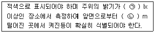
- ㉠100, ㉡ 1
- ㉠100, ㉡ 3
- ㉠300, ㉡ 1
- ㉠300, ㉡ 3
(정답률: 42%)
72. 자동화재속보설비 속보기의 구조기준 중 틀린 것은?
- 접지전극에 직류전류를 통하는 회로방식을 사용하여야 한다.
- 외부에서 쉽게 사람이 접촉할 우려가 있는 충전부는 충분히 보호되어야 하며 정격전압이 60V를 넘고 금속제 외함을 사용하는 경우에는 외함에 접지단자를 설치하여야 한다.
- 극성이 있는 배선을 접속하는 경우에는 오접속 방지를 위한 필요한 조치를 하여야 하며, 커넥터로 접속하는 방식은 구조적으로 오접속이 되지 않는 형태이어야 한다.
- 표시등에 전구를 사용하는 경우에는 2개를 병렬로 설치하여야 한다. 다만, 발광다이오드의 경우에는 그러하지 아니하다.
(정답률: 53%)
73. 주요구조부를 내화구조로 한 특정소방대상물 또는 그 부분에 정온식 스포트형 1종 감지기를 설치하려는 경우에 최소 설치 개수는?(단, 부착높이는 2.7m 이고, 바닥면적은 600m2 이다.)
- 7
- 9
- 10
- 12
(정답률: 45%)
74. 비상경보설비의 축전지 외함이 강판인 경우의 두께는 최소 몇 mm 이상이어야 하는가?
- 1.0
- 1.2
- 2.5
- 3.0
(정답률: 71%)
75. 비상벨설비 또는 자동식사이렌설비 발신기의 위치표시등 설치기준 중 다음 ( ) 안에 알맞은 것은?
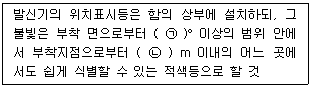
- ㉠ 10, ㉡ 10
- ㉠ 15, ㉡ 10
- ㉠ 10, ㉡ 15
- ㉠ 15, ㉡ 15
(정답률: 74%)
76. 감지기의 구조 및 기능에 따른 분류 중 다음에서 설명하는 것은?
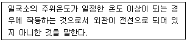
- 차동식스포트형
- 이온화식스포트형
- 정온식스포트형
- 광전식스포트형
(정답률: 64%)
77. 비상벨설비 또는 자동식사이렌설비에는 그 설비에 대한 감시상태를 몇 분간 지속한 후 유효하게 10분 이상 경보할 수 있는 축전지 설비 또는 전기저장장치를 설치하여야 하는가?
- 10분
- 20분
- 30분
- 60분
(정답률: 72%)
78. 무선통신보조설비의 누설동축케이블 및 공중선설치기준 중 다음 ( ) 안에 알맞은 것은?
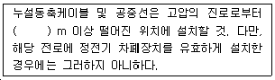
- 1.5
- 3
- 4
- 5
(정답률: 50%)
79. 다음은 누전경보기에 경보기구에 내장하는 음향장치를 사용하는 경우에 대한 구조 및 기능에 관한 내용이다. ( ) 안에 알맞은 것은?
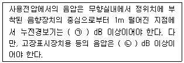
- ㉠ 60, ㉡ 70
- ㉠ 70, ㉡ 60
- ㉠ 80, ㉡ 70
- ㉠ 70, ㉡ 80
(정답률: 39%)
80. 무선통신보조설비 무선기기 접속단자의 설치 기준으로 틀린 것은?(단, 전파법 제 58조의2에 따른 적합성평가를 받은 무선이동중계기를 설치하는 경우는 제외한다.)
- 화재층으로부터 지면으로 떨어지는 유리창 등에 의한 지장을 받지 않고 지상에서 유효하게 소방활동을 할 수 있는 장소 또는 수위실 등 상시 사람이 근무하고 있는 장소에 설치할 것
- 단자는 한국산업규격에 적합한 것으로 하고, 바닥으로부터 0.8m 이상 1.5m 이하의 위치에 설치할 것
- 지상에 설치하는 접속단자는 보행거리 300m 이내마다 설치할 것
- 단자의 보호함 표면에는 소방용 접속단자라고 표시한 표지를 할 것
(정답률: 52%)
물의 비열은 1cal/g℃이므로, 1g의 물이 1℃ 온도가 올라가는 데 필요한 열량은 1cal이다. 따라서 400g의 물이 80℃ 온도가 올라가는 데 필요한 열량은 다음과 같다.
400g × 80℃ × 1cal/g℃ = 32,000cal
하지만 이 과정에서 물이 기화하여 수증기가 되는데, 이때 발생하는 증발잠열도 고려해야 한다. 증발잠열은 539cal/g이므로, 400g의 물이 모두 기화하는 데 필요한 열량은 다음과 같다.
400g × 539cal/g = 215,600cal
따라서 물이 흡수한 총 열량은 32,000cal + 215,600cal = 247,600cal이다. 이를 kcal로 환산하면 247.6kcal이 된다. 따라서 정답은 "247.6"이다.